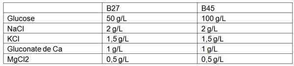

Bienvenue Sur Medical Education
Acidocétose diabétique de l'enfant
EnfantSpécialité : endocrinologie / métabolisme / pédiatrie /
Points importants
-
Ce protocole ne s'applique qu'aux situations d'acidocétose diabétique
-
Son application en dehors de cette situation expose les enfants à une baisse trop rapide de la glycémie, et à un oedème cérébral
Présentation clinique / CIMU
SIGNES FONCTIONNELS
-
Syndrome polyuro-polydypsique ou une énurésie
-
Asthénie
-
Amaigrissement, depuis 1 à 3 mois, d'aggravation récente
-
Douleurs abdominales
-
Polypnée
CONTEXTE
Présentation clinique / CIMU
SIGNES FONCTIONNELS
- Syndrome polyuro-polydypsique ou une énurésie
- Asthénie
- Amaigrissement, depuis 1 à 3 mois, d'aggravation récente
- Douleurs abdominales
- Polypnée
CONTEXTE
Terrain
- Age < 18 ans (l’âge < 5 ans est un facteur de gravité, facteur de risque d’oedème cérébral)
Circonstances de survenue
-
Soit l'acidocétose (ACD) est révélatrice du diabète insulinoprive (ou diabète de type 1) :
- l'interrogatoire retrouve un syndrome polyuro-polydypsique ou une énurésie, une asthénie et un amaigrissement, depuis 1 à 3 mois, d'aggravation récente
-
Soit le diabète est connu et traité :
- arrêt de l'insulinothérapie ou sous-dosage (ex. adolescentes en difficultés psychologiques et/ou sociales)
- défaut d'éducation : absence de suppléments d'insuline rapide au cours d'une hyperglycémie avec cétose lors d'une infection aiguë par ex.
EXAMEN CLINIQUE
Neurologique
- Conscience normale ou obnubilation, plus souvent que coma (noter le score de Glasgow et le suivre)
Cardiopulmonaire
- Signes cliniques de déshydratation de degré variable
- Polypnée et odeur acétonique de l'haleine
Digestif
- Signes digestifs fréquents, parfois tableau pseudo-chirurgical : douleurs abdominales violentes, vomissements
Signes de gravité
- Signes cliniques de déshydratation sévère
- Troubles hémodynamiques
- Coma (Score de Glasgow < 12 à l'admission)
- Nourrisson et jeune enfant (âge < 5 ans)
SIGNES PARACLINIQUES SIMPLES
-
Glycémie capillaire ≥ 2 g/L soit ≥ 11 mmol/L
-
BU (glycosurie positive, cétonurie positive ou cétonémie > 0,6 mmol/L (lecteur Optium Xceed®)
-
ECG (hyperkaliémie, hypokalicytie)
Signes paracliniques
BIOLOGIE
-
GDS veineux (pH < 7,35 et/ou RA < 18 meq/L)
-
Ionogramme sanguin :
-
natrémie variable ; calculer la natrémie corrigée : Na c = Na+ [(gly mmol/L - 5)/ 3 ]
-
kaliémie normale ou élevée ne reflétant pas la kalicytie
-
Glycémie veineuse
-
pH et ionogramme urinaire sur la première miction
-
Signes biologiques de gravité :
-
acidose sévère (pH < 7)
-
hyperglycémie majeure (hyperosmolarité)
-
hypocapnie PCO2 ≤ 15 mmHg et urée élevée ≥ 11 mmol/L
-
ces signes indiquent une prise en charge en soins intensifs
Traitement
STABILISATION INITIALE
- natrémie variable ; calculer la natrémie corrigée : Na c = Na+ [(gly mmol/L - 5)/ 3 ]
- kaliémie normale ou élevée ne reflétant pas la kalicytie
- acidose sévère (pH < 7)
- hyperglycémie majeure (hyperosmolarité)
- hypocapnie PCO2 ≤ 15 mmHg et urée élevée ≥ 11 mmol/L
- ces signes indiquent une prise en charge en soins intensifs
Traitement
STABILISATION INITIALE
Collapsus
- Pose de 2 voies veineuses périphériques
- Sérum physiologique 9‰ 10-20 mL/kg en 20 min
Acidose métabolique
- Ne pas administrer de bicarbonates
Dans tous les cas, de H0 à H2
-
Arrêt total des boissons et de l'alimentation
-
Débuter simultanément sur une voie d'abord en Y (+ 2e voie de prélèvement) :
-
sérum physiologique 9‰ + 1,5 g/L de KCl 10% (après ECG et 1ère diurèse en cas d’hyperkaliémie) au débit de :
-
8 mL/kg/h si Na corrigée < 138 mmol/L ou si ≤ 5 ans
-
10 mL/kg/h dans les autres situations
-
sans dépasser 500 mL/h
-
-
insulinothérapie IVSE :
-
dilution : insuline humaine d’action rapide concentrée à 100U/mL (Umuline Rapide® U100) ; diluer 0,5 mL = 50 UI d’insuline dans 49,5 mL de sérum physiologique soit une solution [1 mL = 1 UI] (prélever 49 mL de sérum physiologique dans une seringue de 50 mL ; prélever l’insuline à l’aide d’une seringue à insuline de 0 ,5 mL = 50 UI ; diluer les 0,5 mL = 50 UI dans les 49 mL de serum physiologique et compléter avec 0,5 mL de sérum physiologique) ; bien purger la tubulure (insuline adsorbée par les parois de la tubulure)
-
au débit de :0,05 UI/kg/h si pH ≥ 7,25 et/ou ≤ 5 ans et/ou insuline sous cutanée dans les 8h qui précèdent0,1 UI/kg/h si pH <7,25
-
-
-
Adapter les débits d'insuline IVSE à chaque glycémie capillaire au doigt (toutes les 30 min de H0 à H2) :
-
la glycémie ne doit pas diminuer de plus de 1 g/L par heure soit pas plus de 5,5 mmol/L par heure (dans ce cas diminuer le debit d’insuline IV de 20%)
-
la perfusion d'insuline ne doit jamais être arrêtée
-
SUIVI DU TRAITEMENT
- Arrêt total des boissons et de l'alimentation
- Perfusion IV sur la base de 3 L/m²/24 h de soluté glucosé B27 supplémenté en KCl 1,5 g/L + NaCl 2 g/L puis B45 supplémenté en KCl 1,5 g/L + NaCl 2 g/L (dès que glycémie ≤ 14 mmol/L)
- Insulinothérapie IVSE : le débit d'insuline IVSE doit être adapté à chaque glycémie capillaire au doigt (toutes les heures de H2 à H24)
_791 Tableau Objectifs glycémiques
Surveillance
CLINIQUE
-
Conscience (score de Glasgow), céphalées, examen neurologique, FC, PA, TRC, FR / h
-
Etat d'hydratation, diurèse (jamais de sondage)
-
T°, poids
-
Douleur abdominale, vomissements
BIOLOGIQUE
-
Glycémie capillaire toutes les 30 min pendant les 2 premières heures de l'insulinothérapie IV, puis toutes les heures avec la cétonémie
-
Glycosurie et cétonurie sur chaque miction
-
Glycémie veineuse, GDS veineux, ionogramme sanguin (natrémie corrigée) et urinaire, urée, créatininémie, calcémie et phosphorémie à H0, H2, H4-H6, H8, H12 et H24
DONNEES UTILES
-
Surface corporelle en m² = (4 P + 7) divisé par (P + 90)
-
Composition des solutés par litre

_792
Tableau
Composition des solutés par litre
-
Natrémie corrigée : Na c = Na+ [(gly mmol/L - 5)/ 3 ]
-
Bicarbonates à 14‰ apporte Na+ = 167 mmol/L
-
NaCl 9‰ apporte Na+ = 153 mmol/L
CE QU'IL NE FAUT PAS FAIRE
-
Dépasser 4 L/m2 dans les 24 premières heures
-
Vouloir normaliser trop vite la glycémie
-
Faire « une dose de charge » d'insuline IV, IM ou SC
-
Arrêter l'insuline en cas de normalisation de la glycémie
-
Oublier d'apporter du K+ ou l'arrêter devant une hyperkaliémie non vérifiée (sang + ECG)
-
Apporter des bicarbonates
-
Se contenter de suivre la biologie et ne pas réexaminer l'enfant dans les douze premières heures (examen neurologique ++)
-
Alimenter ou faire boire de l'eau à l'enfant pendant toute la durée du traitement
TRAITEMENT DE L'OEDEME CEREBRAL AIGU
-
Complication exceptionnelle mais redoutable car responsable de complications neurologiques graves ou de décès
-
L'apparition de tout trouble neurologique dans les heures qui suivent le début du traitement de l'acidocétose, l'aggravation ou l'apparition de troubles de conscience (parfois précédés de signes d'alerte), alors que la biologie est rassurante, doivent faire évoquer un oedème cérébral aigu qui impose un traitement d'extrême urgence
-
Les facteurs de risque sont :
-
le jeune âge de l'enfant (< 5 ans)
-
des volumes de perfusion trop élevés (> 4 L/m2/24h)
-
une chute trop rapide de l'osmolarité plasmatique, donc de la glycémie
-
une PCO2 basse ≤ 15 mmol/L ou une urée élevée ≥ 11 mmol/L
-
l’administration de bicarbonates
-
Signes d'alerte :
-
céphalée
-
agitation inattendue, irritabilité, désorientation, hallucinations
-
diminution de la vigilance
-
ralentissement de plus de 20 bpm de la FC, sans explication hémodynamique, même si ce ralentissement n'est pas une bradycardie et ne s'accompagne pas d'HTA
-
vomissement
-
incontinence chez un enfant habituellement propre
-
augmentation inexpliquée de la FR
-
Traitement :
-
ne pas perdre de temps à attendre l'apparition de signes cliniques indubitables d'oedème cérébral ou à chercher à en faire la preuve radiologique
-
la constatation des signes d'alerte, comme celle d'un engagement, doit faire :
-
administrer immédiatement du mannitol à la dose de 0,5 g/kg IV en 20 min (= 2,5 mL/kg de mannitol à 20%)
-
réduire de 50% les débits d'insuline et des perfusions
-
surélever la tête de 30° et supprimer les obstacles au retour veineux cérébral comme rotation latérale de la tête, compression du cou, du thorax ou de l'abdomen
-
prendre contact avec un réanimateur pédiatrique une fois ces mesures débutées
Devenir / orientation
CRITERES D'ADMISSION EN REANIMATION
-
Voir signes de gravité cliniques et biologiques
Bibliographie
-
Tubiana-Rufi N, Habita C, Czernichow P. Etude critique de l'acidocétose diabétique de l'enfant. Description initiale et évolution au cours des 24 premières heures. Arch Fr Ped 1992, 49 : 175-80.
-
Blanc N, Polak M, Czernichow P, Tubiana-Rufi N. Diabète de l'enfant révélé par une acidocétose sévère. 4 observations pour alerter les médecins. Arch. Pédiatr. 1997 ; 4 : 550-4
-
Nicole Glaser, Peter Barnett, Ian McCaslin, David Nelson, Jennifer Trainor, Jeffrey Louie, Francine Kaufman, Kimberly Quayle, Mark Roback, Richard Malley, Nathan Kuppermann, for the Pediatric Emergency Medicine Collaborative Research Comittee of the American Academy of Pediatrics. Risk factors for cerebral edema in children with diabetic ketoacidosis. N Engl J Med 2001;344:264-9
-
ESPE/LWPES consensus workshop on diabetic ketoacidosis. London, 27-29 june 2003
-
Tubiana-Rufi N et JF Hartmann. Oedème cérébral aigu au cours de l'acidocétose diabétique de l'enfant. Progrès en Pédiatrie. Réanimation Pédiatrique. Doin Ed Paris, 2003. pp 161-71.
- le jeune âge de l'enfant (< 5 ans)
- des volumes de perfusion trop élevés (> 4 L/m2/24h)
- une chute trop rapide de l'osmolarité plasmatique, donc de la glycémie
- une PCO2 basse ≤ 15 mmol/L ou une urée élevée ≥ 11 mmol/L
- l’administration de bicarbonates
- céphalée
- agitation inattendue, irritabilité, désorientation, hallucinations
- diminution de la vigilance
- ralentissement de plus de 20 bpm de la FC, sans explication hémodynamique, même si ce ralentissement n'est pas une bradycardie et ne s'accompagne pas d'HTA
- vomissement
- incontinence chez un enfant habituellement propre
-
augmentation inexpliquée de la FR
- ne pas perdre de temps à attendre l'apparition de signes cliniques indubitables d'oedème cérébral ou à chercher à en faire la preuve radiologique
-
la constatation des signes d'alerte, comme celle d'un engagement, doit faire :
- administrer immédiatement du mannitol à la dose de 0,5 g/kg IV en 20 min (= 2,5 mL/kg de mannitol à 20%)
- réduire de 50% les débits d'insuline et des perfusions
- surélever la tête de 30° et supprimer les obstacles au retour veineux cérébral comme rotation latérale de la tête, compression du cou, du thorax ou de l'abdomen
- prendre contact avec un réanimateur pédiatrique une fois ces mesures débutées
Devenir / orientation
CRITERES D'ADMISSION EN REANIMATION
- Voir signes de gravité cliniques et biologiques
Bibliographie
-
Tubiana-Rufi N, Habita C, Czernichow P. Etude critique de l'acidocétose diabétique de l'enfant. Description initiale et évolution au cours des 24 premières heures. Arch Fr Ped 1992, 49 : 175-80.
-
Blanc N, Polak M, Czernichow P, Tubiana-Rufi N. Diabète de l'enfant révélé par une acidocétose sévère. 4 observations pour alerter les médecins. Arch. Pédiatr. 1997 ; 4 : 550-4
-
Nicole Glaser, Peter Barnett, Ian McCaslin, David Nelson, Jennifer Trainor, Jeffrey Louie, Francine Kaufman, Kimberly Quayle, Mark Roback, Richard Malley, Nathan Kuppermann, for the Pediatric Emergency Medicine Collaborative Research Comittee of the American Academy of Pediatrics. Risk factors for cerebral edema in children with diabetic ketoacidosis. N Engl J Med 2001;344:264-9
-
ESPE/LWPES consensus workshop on diabetic ketoacidosis. London, 27-29 june 2003
-
Tubiana-Rufi N et JF Hartmann. Oedème cérébral aigu au cours de l'acidocétose diabétique de l'enfant. Progrès en Pédiatrie. Réanimation Pédiatrique. Doin Ed Paris, 2003. pp 161-71.
Auteur(s) : Nadia TUBIANA-RUFI, Cécile RAVERDY, Jean-Christophe MERCIER